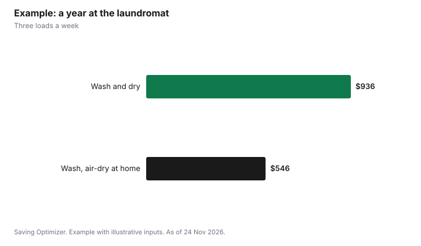

Clothing · Canada
Laundromat and Shared-Laundry Costs in Canada: Cutting the Weekly Bill

In Toronto, a laundromat wash and dry costs about $4.50 to $9 a load. The washers are the fixed part; dryer time is where you can save. Fill the machines, use a bigger washer when it's cheaper per pound, bring your own detergent, and air-dry at home. In this example, that cuts $936 a year to about $546.
Key takeaways
- Toronto: about $4.50 to $9 per wash and dry (Oct 2026 survey, checked 24 Nov 2026).
- Example shop: 20 lb front loader $4.00; dryer 25 cents for 5 minutes.
- Bigger machines can cost less per pound.
- Bring your own detergent.
- Example: $936 a year, or $546 if you air-dry at home.
Typical costs
| Item | Price |
|---|---|
| Wash and dry, per load (survey range) | $4.50 to $9 |
| Smallest washer (survey range) | $2.25 to $6 |
| Typical 36-minute dry | About $2 to $3 |
| Beach Solar, 20 lb front loader | $4.00 |
| Beach Solar, 40 lb front loader | $8.50 |
| Beach Solar, dryer | 25 cents for 5 minutes |
Ways to cut the bill
- Fill each machine, but don't overstuff it.
- Use one large washer instead of two small ones when it's cheaper per pound.
- Shake out clothes before drying, and dry towels separately.
- Air-dry delicates and shirts at home on a rack.
- Wear jeans and sweaters more than once between washes.

A year of laundry: an example
Example: three loads a week at $6 for a wash and dry is $936 a year. Washing at $3.50 and air-drying at home costs $546. A drying rack pays for itself in weeks.
See detergent cost per load and cold-water laundry.
Sources
- Duffloo, Laundromat prices in Toronto: cost per load (updated 5 Oct 2026), checked 24 Nov 2026.
- Beach Solar Laundromat, Self-serve laundromat prices, checked 24 Nov 2026.
Frequently asked questions
How much does a laundromat cost in Toronto?
About $4.50 to $9 for a wash and dry, from an October 2026 survey.
How can I save at the laundromat?
Fill machines, use bigger washers when cheaper per pound, bring detergent and air-dry at home.
Is a bigger washer cheaper?
Sometimes, per pound. Compare the price per load size.
How much does a laundromat dryer cost?
Often 25 cents for 4 or 5 minutes; a typical dry is $2 to $3.
Should I bring my own detergent?
Yes. It's usually cheaper than buying single doses on site.
Researched and drafted with AI assistance and fact-checked against official Canadian sources. How we create content.
Note: Prices vary by shop. Loads and per-load costs are examples. Education only.